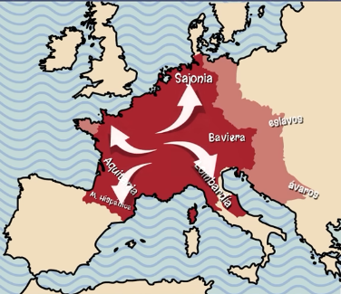

¿Que consiguió en tan poco tiempo?
También conocido como Carlos "El Grande", conquistó gran parte de las tierras de Europa occidental, frenó el avance del islam y estableció fronteras seguras en todo el territorio. De hecho, expulsó a los bávaros, sajones y sometió a los ávaros y eslavos.

Además, convirtió al cristianismo a todos los pueblos bajo su autoridad y reforzó la unión entre el poder político y el poder religioso, obligando a los obispos a jurarle fidelidad.
Carlomagno quiso reconstruir la antigua unidad del Imperio romano de Occidente. Por ello, en el año 800, fue coronado por el papa León III como el nuevo emperador de las tierras de Occidente.
La administración del Imperio de Carlomagno
Para administrar un imperio tan extenso, recaudar impuestos y hacer cumplir la ley, Carlomagno ideó una nueva forma de gobernar:
- Para defender las fronteras de su imperio creó las marcas, territorios fronterizos con numerosas tropas dirigidos cada uno por un jefe militar, el marqués.

Carlomagno quiso reconquistar España del imperio musulmán. Para ello fue avanzando y conquistando pequeños territorios, utilizando estas "marcas", como se ve al norte de la península.
- Para gobernar más eficazmente, dividió el Imperio en condados, con condes al frente que ejercían el poder en su nombre.
- Para supervisar el cumplimiento de sus mandatos creó una especie de inspectores, los missi dominici (que significa "enviados"), que vigilaban la actuación de los condes, marqueses y demás funcionarios.
Este sistema de gobierno se basaba en una cadena de relaciones personales basadas en la fidelidad y la protección.
Carlomagno protegía a los nobles, les entregaba tierras y el derecho de gobernarlas. A cambio, los convertía en sus vasallos y estos le juraban lealtad, respeto y ayuda militar.
Esta cadena de relaciones personales creadas por Carlomagno fue la base de la Europa feudal.
En otras palabras, llevarte bien con Carlomagno suponía tener tu vida resuelta y sin problemas.